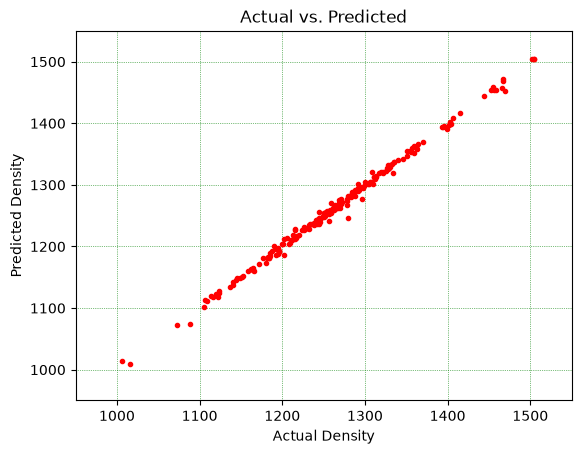

AutoML for Regression Model Screening
The following are the steps for using AutoML for a regression task:
Provide an input pandas dataframe consisting of two columns:
SMILES strings
target class values
If featurization = True, Molecules are represented as:
Coulomb matrix
RDKit Morgan (ECFP6 1024-bit) fingerprints
MACCs keys
RDKit hashed topological torsion
RDKit molecular descriptors (all)
Mordred molecular descriptors
If featurization=False, a feature set must be provided by the user.
Screens through various regressor models:
Single-core (runs regardless of multi_core value):
SVR (if n_datapoints<500)
Multi-core(set multi_core=True):
MLPRegressor (if n_datapoints<=500)
GradientBoostingRegressor (if n_datapoints<=500)
ChemML_MLP (if n_datapoints>500)
(optional) XGBRegressor
(optional) LightGBM
Yields ‘n-best’ models, with optimized hyperparamters.
The output_dir argument specifies a folder that will be created wherever the code is run from, containing the following directory tree:
<output_dir>/
|-- output.log
|-- scores.csv
|-- best_model/
| |-- model.pkl # most non-MLP models
| |-- model_chemml_model.json # MLP case (plus possible extra model files)
| |-- scaler.pkl # present when scaler exists for chosen feature_key
| |-- feature_order.json
| |-- metadata.json
|-- .model_screener_artifacts/
| |-- <run_key_1>/
| |-- model.pkl # or MLP artifact files
| |-- <run_key_2>/
...
Load your data
We are using ChemML’s in-built dataset to demonstrate the minimum requirements to run AutoML.
[1]:
import pandas as pd
from chemml.datasets import load_organic_density
[2]:
molecules, target, dragon_subset = load_organic_density()
df=pd.concat([molecules, target], axis=1)
df = df.sample(200, random_state=42)
df
[2]:
| smiles | density_Kg/m3 | |
|---|---|---|
| 361 | c1scc(n1)c1ncc(s1)c1c(ccc2c1cccc2)c1cncs1 | 1328.35 |
| 73 | S1CC(SC(C1)C1CCCC1)c1cocc1c1ccccc1 | 1143.80 |
| 374 | N1CNC(NC1)c1sccc1C1(CSCCS1)c1cccs1 | 1351.33 |
| 155 | c1nc(c(s1)c1nsnc1)c1csc(n1)c1cccs1 | 1466.57 |
| 104 | Oc1ccc2c(c1c1cocc1)c(ccc2)c1ccccn1 | 1207.67 |
| ... | ... | ... |
| 248 | Oc1ncc(c(c1)C)c1cnccn1 | 1195.16 |
| 145 | Sc1cc2ccccc2c(c1)c1cnccc1c1cnccn1 | 1213.41 |
| 92 | c1sc(c(c1)c1ncccc1c1nsnc1)c1ccc2c(c1)cccc2 | 1264.16 |
| 152 | N1CNC(NC1)(N1CNC(NC1)c1cncs1)c1cccc2c1cccc2 | 1270.40 |
| 367 | C1CSC(CS1)C1(CSC(CS1)c1ccc2c(c1)cccc2)c1cnccn1 | 1268.28 |
200 rows × 2 columns
Run autoML for a regression task
Since we have not provided any feature set, we can use AutoML’s in-built featurization to screen through feature representations and find the most suitable feature set for our data.
[3]:
from chemml.autoML import ModelScreener
MS = ModelScreener(df, target="density_Kg/m3", featurization=True, smiles="smiles",
screener_type="regressor", output_dir="automl_results")
scores = MS.screen_models(n_best=10, multi_core=False)
-------------------------ChemML AutoML Model Screening-------------------------
-------------------------Model screening started at Mon Aug 31 01:37:15 2026-------------------------
Converting SMILES to ChemML Molecule objects...
Converting SMILES to ChemML Molecule objects: 100%|██████████| 200/200 [00:06<00:00, 29.03it/s]
Generating Coulomb matrix representation...
featurizing molecules in batches of 12 ...
200/200 ━━━━━━━━━━━━━━━━━━━━━━━━━━━━━━━━━━━━━━━━━━━━━━━━━━ 13s 66ms/step
Merging batch features ... [DONE]
Generating RDKit fingerprint representations...
Generating Morgan Fingerprints: 100%|██████████| 200/200 [00:00<00:00, 8905.58molecule/s]
Generating MACCS Fingerprints: 100%|██████████| 200/200 [00:00<00:00, 1264.05molecule/s]
Generating Hashed Topological Torsion Fingerprints: 100%|██████████| 200/200 [00:00<00:00, 6718.20molecule/s]
Generating Atom Pair Fingerprints: 100%|██████████| 200/200 [00:00<00:00, 7265.51molecule/s]
Generating RDKit descriptor representations...
Step 1: Normalizing molecule input
Step 2: Calculating RDKit descriptors: 100%|██████████| 200/200 [00:02<00:00, 94.76it/s]
Generating Mordred descriptor representations...
Step 1: Normalizing molecule input
Normalizing Molecule input: 100%|██████████| 200/200 [00:00<00:00, 514007.84it/s]
Step 2/3: Optimizing geometry for 3D descriptor calculation
3D geometry already exists, loading geometry: 100%|██████████| 200/200 [00:00<00:00, 77129.53it/s]
Step 3/3: Calculating Mordred descriptors
100%|██████████| 200/200 [00:06<00:00, 32.11it/s]
Cleaning feature sets to remove constant, highly correlated, low-variance, and complex features...
Feature set 'CoulombMatrix' cleaned: 25 features retained.
Feature set 'morganfingerprints_radius3' cleaned: 252 features retained.
Feature set 'MACCS_radius3' cleaned: 48 features retained.
Feature set 'hashedtopologicaltorsion_radius3' cleaned: 76 features retained.
Feature set 'hashedatompair_radius3' cleaned: 421 features retained.
Feature set 'rdkit_descriptors' cleaned: 90 features retained.
Feature set 'mord_descriptors' cleaned: 530 features retained.
-------------------------Run parameters-------------------------
Featurization: True
Multi_core: False
Screener_type: regressor
Number of datapoints: 200
Note: Dataset <= 500 samples; MLP is excluded from screening due to inefficiency.
split done!
Single-core complete
------------------------- Screening complete for feature set CoulombMatrix, time taken: 10.8 seconds -------------------------
split done!
Single-core complete
------------------------- Screening complete for feature set morganfingerprints_radius3, time taken: 10.383 seconds -------------------------
split done!
Single-core complete
------------------------- Screening complete for feature set MACCS_radius3, time taken: 11.583 seconds -------------------------
split done!
Single-core complete
------------------------- Screening complete for feature set hashedtopologicaltorsion_radius3, time taken: 15.719 seconds -------------------------
split done!
Single-core complete
------------------------- Screening complete for feature set hashedatompair_radius3, time taken: 12.056 seconds -------------------------
split done!
Single-core complete
------------------------- Screening complete for feature set rdkit_descriptors, time taken: 21.011 seconds -------------------------
split done!
Single-core complete
------------------------- Screening complete for feature set mord_descriptors, time taken: 13.296 seconds -------------------------
[4]:
scores
[4]:
| ME | MAE | MSE | RMSE | MSLE | RMSLE | MAPE | MaxAPE | RMSPE | MPE | MaxAE | deltaMaxE | r_squared | time(seconds) | Model | parameters | Feature | run_key | |
|---|---|---|---|---|---|---|---|---|---|---|---|---|---|---|---|---|---|---|
| 33 | 4.552818 | 11.553280 | 181.728198 | 13.480660 | 0.000114 | 0.010676 | 0.910524 | 2.579643 | 1.062078 | 0.353552 | 33.017888 | 45.542634 | 0.980328 | 4.930333 | Lasso | {'alpha': 0.10000000000000002, 'copy_X': True,... | mord_descriptors | Lasso_mord_descriptors_3a7194cd47ba458d8ba38a4... |
| 30 | 3.515362 | 10.915172 | 188.539081 | 13.730953 | 0.000124 | 0.011143 | 0.869834 | 2.193016 | 1.108684 | 0.290819 | 28.069291 | 47.432492 | 0.979591 | 1.207374 | Ridge | {'alpha': 63.800000000000004, 'copy_X': True, ... | mord_descriptors | Ridge_mord_descriptors_c196269642bc48e1ac9f745... |
| 34 | 3.687586 | 10.678849 | 191.563700 | 13.840654 | 0.000122 | 0.011051 | 0.843186 | 2.740330 | 1.099991 | 0.299250 | 35.074581 | 57.654403 | 0.979263 | 5.995100 | ElasticNet | {'alpha': 0.06951927961775611, 'copy_X': True,... | mord_descriptors | ElasticNet_mord_descriptors_516936b2cb4d4804af... |
| 31 | 4.483152 | 11.853263 | 232.867162 | 15.259986 | 0.000144 | 0.012013 | 0.928513 | 2.919669 | 1.198157 | 0.343363 | 37.370005 | 66.251821 | 0.974792 | 2.749953 | SVR | {'C': 1.0, 'cache_size': 200, 'coef0': 0.0, 'd... | mord_descriptors | SVR_mord_descriptors_f44f5f430c6043969a4062edb... |
| 27 | 4.182179 | 16.889614 | 476.895174 | 21.837930 | 0.000284 | 0.016856 | 1.318434 | 4.192188 | 1.674893 | 0.308835 | 61.499391 | 97.646100 | 0.948376 | 1.832462 | Lasso | {'alpha': 0.10000000000000002, 'copy_X': True,... | rdkit_descriptors | Lasso_rdkit_descriptors_91aafe99bf1344fe8545c7... |
| 26 | 4.139097 | 17.790071 | 496.914400 | 22.291577 | 0.000297 | 0.017234 | 1.389557 | 4.205474 | 1.713232 | 0.310069 | 61.694307 | 98.196240 | 0.946209 | 0.783303 | Ridge | {'alpha': 5.0, 'copy_X': True, 'fit_intercept'... | rdkit_descriptors | Ridge_rdkit_descriptors_8e884cb01ad148408712ef... |
| 28 | 4.401149 | 18.037694 | 503.715533 | 22.443608 | 0.000301 | 0.017348 | 1.408142 | 4.234329 | 1.724064 | 0.330047 | 62.117602 | 98.276555 | 0.945473 | 1.884814 | ElasticNet | {'alpha': 0.10000000000000002, 'copy_X': True,... | rdkit_descriptors | ElasticNet_rdkit_descriptors_19bde069eb2649ecb... |
| 29 | 5.004877 | 19.254586 | 623.825962 | 24.976508 | 0.000380 | 0.019482 | 1.513790 | 4.573626 | 1.934141 | 0.382821 | 67.095092 | 105.112449 | 0.932471 | 13.696179 | SVR | {'C': 11.421052631578947, 'cache_size': 200, '... | rdkit_descriptors | SVR_rdkit_descriptors_b46b8047cc1a428298ed35da... |
| 25 | 7.912750 | 27.688750 | 1137.561421 | 33.727754 | 0.000713 | 0.026710 | 2.159354 | 6.548075 | 2.645154 | 0.525923 | 78.700000 | 134.570000 | 0.876860 | 1.285904 | DecisionTreeRegressor | {'ccp_alpha': 0.0, 'criterion': 'absolute_erro... | rdkit_descriptors | DecisionTreeRegressor_rdkit_descriptors_b102e2... |
| 21 | -4.632258 | 25.970876 | 1146.052758 | 33.853401 | 0.000693 | 0.026329 | 2.024358 | 7.226699 | 2.680475 | -0.414917 | 87.839081 | 133.848639 | 0.875940 | 1.143952 | Ridge | {'alpha': 78.5, 'copy_X': True, 'fit_intercept... | hashedatompair_radius3 | Ridge_hashedatompair_radius3_7c27bb60e96049318... |
Validating AutoML-generated model
Since ChemML v1.3.4, AutoML outputs the best model and required scaler and feature order as easy-to-import files. A quick demonstration of the model loading workflow is given below:
[5]:
import pickle
import json
with open('automl_results/best_model/metadata.json', 'r') as f:
metadata = json.load(f)
with open('automl_results/best_model/explanation.json', 'r') as f:
explanation = json.load(f)
with open('automl_results/best_model/feature_order.json', 'r') as f:
feature_order = json.load(f)
with open("automl_results/best_model/model.pkl", "rb") as f:
loaded_model = pickle.load(f)
with open("automl_results/best_model/scaler.pkl", "rb") as f:
loaded_scaler = pickle.load(f)
Metadata isn’t necessary for model validation, but gives us a lot of context from the AutoML screening workflow.
[6]:
metadata
[6]:
{'artifact_schema_version': 1,
'model_name': 'Lasso',
'feature_key': 'mord_descriptors',
'run_key': 'Lasso_mord_descriptors_3a7194cd47ba458d8ba38a4c42e3dc6d',
'screener_type': 'regressor',
'parameters': {'alpha': 0.10000000000000002,
'copy_X': True,
'fit_intercept': True,
'max_iter': 1000,
'positive': False,
'precompute': False,
'random_state': None,
'selection': 'cyclic',
'tol': 0.0001,
'warm_start': False},
'n_folds': 5,
'n_datapoints': 200,
'metrics': {'ME': 4.552817883339197,
'MAE': 11.553280063774162,
'MSE': 181.72819797227447,
'RMSE': 13.480660146011934,
'MSLE': 0.00011396673759956667,
'RMSLE': 0.010675520483778142,
'MAPE': 0.9105242223102075,
'MaxAPE': 2.5796433993517534,
'RMSPE': 1.0620775201892783,
'MPE': 0.35355188263843224,
'MaxAE': 33.01788772566283,
'deltaMaxE': 45.5426336527853,
'r_squared': 0.980328032332101,
'time(seconds)': 4.930333375930786},
'model_serializer': 'pickle',
'model_artifact_dir': 'model_artifact',
'scaler_file': 'scaler.pkl',
'feature_order_file': 'feature_order.json',
'timestamp': 'Mon Aug 31 01:39:25 2026'}
Explanation gives the user a list of feature importances alongside feature names; while not necessary for validation, this is useful to understand what features the model is actually using
[7]:
explanation
[7]:
{'model_type': 'Lasso',
'explanation_type': 'linear.coef_',
'importance_values': {'AATSC0Z': 28.012900357435722,
'AATS1se': 27.583120713121403,
'AMID_h': 12.055038066747914,
'MIC2': 10.045620227882683,
'GATS2i': -9.042124462668491,
'GATS1p': -7.354977238746177,
'SpDiam_A': 6.726688403957051,
'C2SP3': -5.591252791033305,
'Mor06p': 5.2500775423204304,
'AATS8dv': 4.8109148833883,
'ZMIC4': 4.683909744557295,
'GATS7s': -4.2733394067530215,
'NaaN': 4.0778101734185075,
'NsCH3': -4.031087808617084,
'ATSC1pe': -3.9878753533945037,
'Mor27m': 3.9049517797044606,
'ATSC2d': -3.6164709139902325,
'MDEC-22': -3.3562645191398004,
'MATS7s': -3.3299319725002325,
'Mor31': -3.233335107924634,
'VSA_EState1': 3.096026758544977,
'AATSC3Z': -2.9299423458120306,
'AATS7se': 2.8514396676457734,
'GATS8Z': 2.7909016705914294,
'ATSC1i': -2.6094166454339014,
'Mor08': -2.3210227304435325,
'Mor32m': 2.311053179367852,
'AATS7dv': 2.2720719610502043,
'GATS6c': -2.239558871212753,
'GATS3Z': -2.182318800354107,
'GeomRadius': 2.1622850010862686,
'Mor06': -2.126688194238739,
'GATS6i': 2.0877098445975775,
'ATSC6c': -2.0810486982550613,
'Mor18m': -1.9553538109138944,
'ATS7Z': -1.9315114841892362,
'MATS8s': -1.896337434988026,
'MATS7se': -1.8934550073453553,
'ATSC4se': 1.7650120189269423,
'GATS7c': -1.641581287765814,
'Mor26m': 1.577904395408391,
'ATSC4i': -1.566327233570521,
'GATS4dv': 1.522849838289012,
'Mor08m': 1.498998724869166,
'GGI6': -1.4887000990735948,
'ATSC5Z': -1.4744774617897087,
'ATSC0Z': 1.4563678200672814,
'Mor30m': -1.4366792446800893,
'BCUTd-1h': -1.4047179154889509,
'GATS1v': -1.4010746192631953,
'GATS4d': 1.3546510016250888,
'AATS6p': 1.3402285499839746,
'EState_VSA3': 1.331851877186613,
'ETA_beta_ns_d': 1.2472424735125094,
'EState_VSA10': 1.2460205319655364,
'PEOE_VSA10': 1.2193539938482074,
'ATSC7se': 1.2136992014233667,
'Mor12m': 1.1958135876100358,
'ATSC8pe': -1.1874359616012609,
'GATS4p': 1.1809986175118783,
'AATSC2Z': -1.1762628322771915,
'EState_VSA9': 1.135827903654703,
'GeomDiameter': 1.134749434867131,
'Mor19': -1.0368299813951307,
'Mor03': -0.9908395783872673,
'ATSC8v': 0.9623213981341334,
'Mor17': 0.9300665599352823,
'AATS6se': 0.8776051158610542,
'Mor16m': 0.8636911078931104,
'BCUTdv-1l': 0.7824838660887756,
'BCUTs-1l': -0.7790779225419351,
'VSA_EState7': -0.7231425759826096,
'Mor23v': 0.6864958939020279,
'ATSC8s': -0.6492842071511602,
'MATS1c': -0.6110958331929972,
'RPCS': 0.6061807410396066,
'Mor13': 0.5771621621329794,
'Mor29': 0.5729484951040458,
'BCUTv-1l': -0.5364912859183224,
'Mor27': -0.5199838003581592,
'Mor14m': -0.49885083042878037,
'RNCS': -0.4709699612068487,
'ATSC7i': 0.4564951804103089,
'GATS5p': 0.45445658818812107,
'ATSC3Z': -0.4541469044094732,
'GATS3pe': -0.4534761037497193,
'GATS3se': -0.45320873550405516,
'Mor09': 0.44067677473814004,
'BCUTdv-1h': -0.4331796206217456,
'Mor13m': 0.4311583368360955,
'MOMI-Z': -0.4168298077982454,
'SMR_VSA9': -0.39609316613612233,
'BCUTi-1h': 0.39595003084238045,
'ZMIC2': 0.3559846428336694,
'ATSC4s': 0.35136005701664563,
'Mor21m': -0.34944270053999066,
'MOMI-X': 0.34024511935172036,
'Mor05': -0.33714117682027256,
'ATSC3se': -0.33030676013484417,
'Mor28': -0.30707702153951827,
'n6aHRing': -0.26684187962901446,
'ATSC1dv': -0.257855333466701,
'SssssC': 0.2568690218303352,
'Mor24': 0.2339989848426439,
'ATSC4c': 0.20990132236157932,
'SlogP_VSA11': 0.2050387554046178,
'EState_VSA2': 0.17029503917217784,
'ATSC4v': -0.16899175791863136,
'MATS8c': 0.16177124282143437,
'C3SP3': 0.13708082063127403,
'AATS6d': 0.10563704026892254,
'ATSC1s': -0.10188989724213939,
'SM1_DzZ': 0.08479288306819252,
'Mor05v': -0.06290731676508811,
'Mor10': 0.05208194143342154,
'ATSC5se': 0.04629656719959114,
'AATS8se': 0.04371660784846001,
'AATS6Z': 0.0433391371869164,
'PEOE_VSA7': -0.023701661132782152,
'Mor04': 0.00979816509030612,
'ATSC4pe': 0.002006335217403847,
'ZMIC3': 0.000210759590768856,
'ABC': 0.0,
'ABCGG': 0.0,
'nBase': 0.0,
'nAromAtom': 0.0,
'nAtom': -0.0,
'nHetero': 0.0,
'nH': -0.0,
'nC': -0.0,
'nN': 0.0,
'nO': -0.0,
'nS': 0.0,
'ATS0dv': 0.0,
'ATS8dv': -0.0,
'ATS0s': 0.0,
'ATS1s': -0.0,
'ATS0Z': 0.0,
'ATS1Z': 0.0,
'ATS3Z': -0.0,
'ATS4Z': 0.0,
'ATS5Z': 0.0,
'ATS6Z': -0.0,
'ATS8Z': -0.0,
'ATS0p': 0.0,
'AATS0dv': 0.0,
'AATS6dv': 0.0,
'AATS0d': 0.0,
'AATS4d': 0.0,
'AATS5d': 0.0,
'AATS7d': 0.0,
'AATS8d': 0.0,
'AATS0s': 0.0,
'AATS1s': 0.0,
'AATS4s': 0.0,
'AATS5s': -0.0,
'AATS6s': -0.0,
'AATS7s': 0.0,
'AATS8s': 0.0,
'AATS0Z': 0.0,
'AATS4Z': 0.0,
'AATS5Z': 0.0,
'AATS7Z': -0.0,
'AATS8Z': 0.0,
'AATS0v': 0.0,
'AATS4v': 0.0,
'AATS5v': 0.0,
'AATS6v': 0.0,
'AATS7v': 0.0,
'AATS8v': 0.0,
'AATS0se': 0.0,
'AATS3se': 0.0,
'AATS5se': 0.0,
'AATS0p': 0.0,
'AATS5p': 0.0,
'AATS7p': 0.0,
'AATS0i': 0.0,
'AATS3i': -0.0,
'AATS4i': -0.0,
'AATS5i': 0.0,
'AATS6i': -0.0,
'AATS7i': 0.0,
'AATS8i': 0.0,
'ATSC0c': 0.0,
'ATSC1c': -0.0,
'ATSC2c': 0.0,
'ATSC3c': -0.0,
'ATSC5c': 0.0,
'ATSC0dv': 0.0,
'ATSC2dv': -0.0,
'ATSC3dv': -0.0,
'ATSC4dv': 0.0,
'ATSC5dv': 0.0,
'ATSC6dv': 0.0,
'ATSC7dv': -0.0,
'ATSC8dv': 0.0,
'ATSC1d': -0.0,
'ATSC3d': -0.0,
'ATSC4d': -0.0,
'ATSC5d': 0.0,
'ATSC6d': 0.0,
'ATSC7d': -0.0,
'ATSC8d': 0.0,
'ATSC0s': 0.0,
'ATSC2s': -0.0,
'ATSC3s': -0.0,
'ATSC5s': -0.0,
'ATSC6s': -0.0,
'ATSC7s': 0.0,
'ATSC1Z': 0.0,
'ATSC2Z': -0.0,
'ATSC4Z': -0.0,
'ATSC6Z': 0.0,
'ATSC7Z': -0.0,
'ATSC8Z': -0.0,
'ATSC1v': -0.0,
'ATSC2v': 0.0,
'ATSC3v': -0.0,
'ATSC5v': -0.0,
'ATSC6v': 0.0,
'ATSC7v': 0.0,
'ATSC1se': -0.0,
'ATSC2se': -0.0,
'ATSC6se': -0.0,
'ATSC8se': -0.0,
'ATSC0pe': 0.0,
'ATSC2pe': -0.0,
'ATSC3pe': -0.0,
'ATSC5pe': 0.0,
'ATSC6pe': 0.0,
'ATSC7pe': 0.0,
'ATSC1p': -0.0,
'ATSC2p': 0.0,
'ATSC3p': -0.0,
'ATSC4p': -0.0,
'ATSC5p': -0.0,
'ATSC6p': 0.0,
'ATSC7p': -0.0,
'ATSC8p': 0.0,
'ATSC0i': 0.0,
'ATSC2i': -0.0,
'ATSC3i': -0.0,
'ATSC5i': 0.0,
'ATSC6i': -0.0,
'ATSC8i': 0.0,
'AATSC0dv': 0.0,
'AATSC1dv': -0.0,
'AATSC3dv': -0.0,
'AATSC4dv': -0.0,
'AATSC5dv': 0.0,
'AATSC6dv': 0.0,
'AATSC7dv': -0.0,
'AATSC8dv': 0.0,
'AATSC8d': 0.0,
'AATSC0s': 0.0,
'AATSC8s': -0.0,
'AATSC1Z': 0.0,
'AATSC4Z': 0.0,
'AATSC5Z': -0.0,
'AATSC6Z': -0.0,
'AATSC7Z': -0.0,
'AATSC8Z': 0.0,
'AATSC0v': 0.0,
'AATSC3v': -0.0,
'AATSC4v': -0.0,
'AATSC5v': 0.0,
'AATSC6v': 0.0,
'AATSC7v': 0.0,
'AATSC8v': 0.0,
'AATSC0i': 0.0,
'AATSC3i': -0.0,
'AATSC4i': 0.0,
'AATSC5i': -0.0,
'AATSC6i': 0.0,
'AATSC7i': -0.0,
'AATSC8i': 0.0,
'MATS2c': -0.0,
'MATS3c': -0.0,
'MATS1s': -0.0,
'MATS6s': -0.0,
'MATS6Z': 0.0,
'MATS8se': 0.0,
'MATS7pe': -0.0,
'MATS8pe': 0.0,
'GATS1c': 0.0,
'GATS2c': -0.0,
'GATS3c': -0.0,
'GATS4c': -0.0,
'GATS5c': -0.0,
'GATS8c': -0.0,
'GATS1dv': -0.0,
'GATS2dv': -0.0,
'GATS5dv': 0.0,
'GATS6dv': -0.0,
'GATS7dv': 0.0,
'GATS8dv': -0.0,
'GATS1d': -0.0,
'GATS2d': -0.0,
'GATS3d': 0.0,
'GATS5d': 0.0,
'GATS6d': -0.0,
'GATS7d': -0.0,
'GATS8d': -0.0,
'GATS1s': -0.0,
'GATS2s': 0.0,
'GATS3s': -0.0,
'GATS4s': 0.0,
'GATS5s': 0.0,
'GATS6s': -0.0,
'GATS8s': 0.0,
'GATS2Z': -0.0,
'GATS4Z': 0.0,
'GATS5Z': 0.0,
'GATS6Z': -0.0,
'GATS7Z': 0.0,
'GATS7v': -0.0,
'GATS8v': -0.0,
'GATS1se': 0.0,
'GATS2se': -0.0,
'GATS4se': -0.0,
'GATS5se': 0.0,
'GATS6se': 0.0,
'GATS7se': 0.0,
'GATS8se': -0.0,
'GATS1pe': -0.0,
'GATS2pe': -0.0,
'GATS7pe': 0.0,
'GATS2p': -0.0,
'GATS3p': -0.0,
'GATS6p': 0.0,
'GATS7p': -0.0,
'GATS8p': 0.0,
'GATS1i': 0.0,
'GATS3i': -0.0,
'GATS4i': 0.0,
'GATS5i': 0.0,
'GATS7i': 0.0,
'GATS8i': 0.0,
'BCUTd-1l': -0.0,
'BCUTs-1h': -0.0,
'BCUTZ-1h': 0.0,
'BCUTse-1h': -0.0,
'BalabanJ': -0.0,
'SpAbs_Dzv': -0.0,
'SpMAD_Dzv': 0.0,
'SM1_Dzv': -0.0,
'SpMAD_Dzse': 0.0,
'SM1_Dzse': 0.0,
'BertzCT': -0.0,
'nBondsS': -0.0,
'PNSA1': -0.0,
'PNSA2': 0.0,
'PNSA3': -0.0,
'PNSA4': -0.0,
'PNSA5': -0.0,
'PPSA1': 0.0,
'PPSA2': -0.0,
'PPSA3': 0.0,
'PPSA4': 0.0,
'PPSA5': 0.0,
'DPSA1': 0.0,
'DPSA3': 0.0,
'DPSA4': 0.0,
'FNSA2': -0.0,
'WNSA1': -0.0,
'WNSA3': 0.0,
'WNSA4': 0.0,
'WNSA5': -0.0,
'WPSA1': -0.0,
'WPSA3': -0.0,
'WPSA4': 0.0,
'TASA': 0.0,
'TPSA': -0.0,
'C1SP2': -0.0,
'C2SP2': -0.0,
'C3SP2': 0.0,
'C1SP3': -0.0,
'HybRatio': -0.0,
'Xch-5d': -0.0,
'Xch-7d': 0.0,
'Xch-6dv': -0.0,
'Xch-7dv': -0.0,
'Xc-3d': -0.0,
'Xc-5d': 0.0,
'Xc-3dv': -0.0,
'Xc-5dv': 0.0,
'Xpc-4d': 0.0,
'NssCH2': -0.0,
'NaaCH': -0.0,
'NsssCH': 0.0,
'NaasC': 0.0,
'NaaaC': 0.0,
'NsssN': -0.0,
'NsOH': 0.0,
'NaaO': -0.0,
'NsSH': 0.0,
'NssS': 0.0,
'NaaS': 0.0,
'SsssCH': -0.0,
'SaasC': -0.0,
'ETA_beta_s': 0.0,
'ETA_eta': -0.0,
'AETA_eta': -0.0,
'AETA_eta_F': 0.0,
'GeomShapeIndex': 0.0,
'IC0': 0.0,
'IC1': 0.0,
'IC2': 0.0,
'IC3': 0.0,
'IC4': 0.0,
'TIC0': 0.0,
'TIC1': -0.0,
'MIC0': 0.0,
'MIC1': 0.0,
'ZMIC1': 0.0,
'Kier3': 0.0,
'FilterItLogS': 0.0,
'Mor02': -0.0,
'Mor07': 0.0,
'Mor11': 0.0,
'Mor12': 0.0,
'Mor14': -0.0,
'Mor15': 0.0,
'Mor16': -0.0,
'Mor18': -0.0,
'Mor20': 0.0,
'Mor21': -0.0,
'Mor22': 0.0,
'Mor23': 0.0,
'Mor25': -0.0,
'Mor26': 0.0,
'Mor30': -0.0,
'Mor32': 0.0,
'Mor02m': -0.0,
'Mor03m': 0.0,
'Mor04m': -0.0,
'Mor05m': -0.0,
'Mor06m': 0.0,
'Mor07m': -0.0,
'Mor09m': -0.0,
'Mor10m': 0.0,
'Mor11m': -0.0,
'Mor15m': 0.0,
'Mor17m': 0.0,
'Mor19m': -0.0,
'Mor20m': 0.0,
'Mor22m': 0.0,
'Mor23m': 0.0,
'Mor24m': 0.0,
'Mor25m': 0.0,
'Mor28m': 0.0,
'Mor29m': -0.0,
'Mor31m': 0.0,
'Mor02v': -0.0,
'Mor03v': -0.0,
'Mor04v': 0.0,
'Mor06v': 0.0,
'Mor07v': -0.0,
'Mor08v': -0.0,
'Mor09v': 0.0,
'Mor10v': -0.0,
'Mor11v': -0.0,
'Mor12v': 0.0,
'Mor13v': 0.0,
'Mor14v': -0.0,
'Mor15v': -0.0,
'Mor16v': 0.0,
'Mor17v': 0.0,
'Mor18v': -0.0,
'Mor19v': -0.0,
'Mor20v': 0.0,
'Mor22v': 0.0,
'Mor24v': 0.0,
'Mor25v': -0.0,
'Mor26v': 0.0,
'Mor27v': 0.0,
'Mor28v': 0.0,
'Mor29v': 0.0,
'Mor30v': -0.0,
'Mor31v': -0.0,
'Mor32v': 0.0,
'Mor03p': -0.0,
'Mor08p': -0.0,
'PEOE_VSA1': -0.0,
'PEOE_VSA2': 0.0,
'PEOE_VSA3': 0.0,
'PEOE_VSA4': 0.0,
'PEOE_VSA5': 0.0,
'PEOE_VSA6': -0.0,
'PEOE_VSA8': 0.0,
'PEOE_VSA9': 0.0,
'PEOE_VSA11': -0.0,
'SMR_VSA4': -0.0,
'SMR_VSA5': -0.0,
'SMR_VSA6': 0.0,
'SlogP_VSA2': 0.0,
'SlogP_VSA3': -0.0,
'SlogP_VSA4': 0.0,
'SlogP_VSA5': 0.0,
'SlogP_VSA8': -0.0,
'SlogP_VSA10': 0.0,
'EState_VSA4': -0.0,
'EState_VSA5': 0.0,
'EState_VSA6': -0.0,
'EState_VSA7': 0.0,
'EState_VSA8': -0.0,
'VSA_EState2': -0.0,
'VSA_EState3': 0.0,
'VSA_EState4': 0.0,
'VSA_EState5': 0.0,
'VSA_EState6': -0.0,
'VSA_EState8': -0.0,
'PBF': -0.0,
'bpol': -0.0,
'n6Ring': 0.0,
'nHRing': -0.0,
'n5HRing': 0.0,
'n6HRing': -0.0,
'n6aRing': 0.0,
'naHRing': -0.0,
'nARing': -0.0,
'n5ARing': -0.0,
'SLogP': -0.0,
'GGI1': -0.0,
'GGI3': -0.0,
'GGI4': -0.0,
'GGI5': 0.0,
'Diameter': -0.0,
'SRW05': 0.0,
'TSRW10': 0.0}}
feature_order ensures that the trained model sees features in the exact same order as trained.
[8]:
feature_order[:5]
[8]:
['ABC', 'ABCGG', 'nBase', 'SpDiam_A', 'nAromAtom']
[9]:
from chemml.chem import Molecule
from sklearn.preprocessing import StandardScaler
from sklearn.model_selection import train_test_split
import tqdm
from chemml.chem import Mordred
from sklearn.svm import SVR
mol_objs_list = []
for i, smi in enumerate(tqdm.tqdm(df["smiles"], desc="Converting SMILES to ChemML Molecule objects")):
mol = Molecule(smi, 'smiles')
mol.hydrogens('add')
try:
mol.to_xyz('MMFF', maxIters=10000, mmffVariant='MMFF94s')
mol_objs_list.append(mol)
except Exception as e:
print(f"\nUnable to process SMILES: {smi}; Error: {e}")
# self.discarded_indices.append(i)
loaded_mols = mol_objs_list
features = Mordred(ignore_3D=False).represent(loaded_mols).drop(columns=['SMILES'])[feature_order].values
targets = df["density_Kg/m3"].values
X_test = loaded_scaler.transform(features)
y_pred = loaded_model.predict(X_test)
Converting SMILES to ChemML Molecule objects: 100%|██████████| 200/200 [00:06<00:00, 29.14it/s]
Step 1: Normalizing molecule input
Step 2/3: Optimizing geometry for 3D descriptor calculation
Step 3/3: Calculating Mordred descriptors
The loaded_model object can be treated just like any model object
[10]:
loaded_model
[10]:
Lasso(alpha=np.float64(0.10000000000000002))In a Jupyter environment, please rerun this cell to show the HTML representation or trust the notebook.
On GitHub, the HTML representation is unable to render, please try loading this page with nbviewer.org.
Parameters
Fitted attributes
[11]:
targets[:5], y_pred[:5]
[11]:
(array([1328.35, 1143.8 , 1351.33, 1466.57, 1207.67]),
array([1332.70141881, 1145.09482801, 1347.18620498, 1472.06678856,
1204.79752648]))
[12]:
from chemml.utils import regression_metrics
regression_metrics(targets, y_pred)
[12]:
| ME | MAE | MSE | RMSE | MSLE | RMSLE | MAPE | MaxAPE | RMSPE | MPE | MaxAE | deltaMaxE | r_squared | std | |
|---|---|---|---|---|---|---|---|---|---|---|---|---|---|---|
| 0 | 0.455282 | 3.698161 | 29.72562 | 5.452121 | 0.000019 | 0.00435 | 0.294964 | 2.579643 | 0.433903 | 0.033271 | 33.017888 | 45.542634 | 0.996445 | 91.441066 |
[13]:
from chemml.visualization import scatter2D, SavePlot, decorator
import pandas as pd
%matplotlib inline
df_viz = pd.DataFrame()
df_viz["Actual"] = targets.reshape(-1,)
df_viz["Predicted"] = y_pred.reshape(-1,)
sc = scatter2D('r', marker='.')
fig = sc.plot(dfx=df_viz, dfy=df_viz, x="Actual", y="Predicted")
dec = decorator(title='Actual vs. Predicted',xlabel='Actual Density', ylabel='Predicted Density',
xlim= (950,1550), ylim=(950,1550), grid=True,
grid_color='g', grid_linestyle=':', grid_linewidth=0.5)
fig = dec.fit(fig)
# print(type(fig))
sa=SavePlot(filename='Parity',output_directory='automl_results/val/images',
kwargs={'facecolor':'w','dpi':330,'pad_inches':0.1, 'bbox_inches':'tight'})
sa.save(obj=fig)
fig.show()
The Plot has been saved at: .\automl_results/val/images/Parity.png
